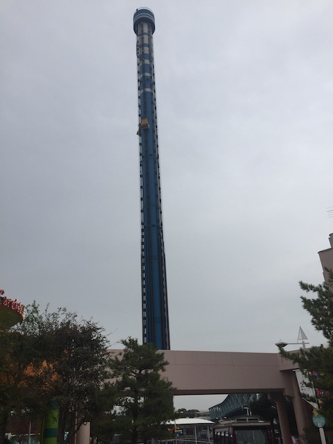

| |
Sea Paradise Review

Sea Paradise is an interesting park to say the least. On the one hand, this is another one of those animal parks, or rather, Aquarium parks in this case. I know the Sea World parks are by far, the biggest example of these types of parks since they are the most well known for their animals, animal shows, and the work that they do with animals. They also get the most bullsh*t criticism because of their notoriety, but I'm not gonna complain about that today. Other animal and aquarium parks outside of Sea World exist, and one of the more unique examples of which is Sea Paradise, in Hakkeijima, part of the Yokohama Bay. Now when I talk about most of these animal and aquarium parks, they generally blend together pretty well as both a theme park and a zoo or aquarium. Sure, there's Tobu Zoo, which feels more like a zoo and a theme park in the same spot, but the two are clearly segregated. Sea Paradise is also segregated in a similar fashion. Except while the theme park half of Tobu Zoo feels like a standard theme park, I can't exactly say the same for Sea Paradise. The "theme park" in Sea Paradise doesn't feel like a theme park at all. It feels more like a local city park, if you had a handful of rides scattered around. And when I say scattered, I mean SCATTERED. Sea Paradise may not have a lot of rides, but this place is HUGE!!! Rides are very far apart and you'll have to do a lot of walking, which....not a problem for me, but I can imagine some of the lazier coaster enthusiasts complaining (Bah! They have a tram just for you). Now normally, Sea Paradise is not a park I would have any interest in, but...they have 2 rides that really put this small little aquarium park on the map. Keep reading our review, and we'll go over the things that make this park something special.
Rollercoasters
There is a link to a review of all the Rollercoasters at Sea Paradise.
Top Coasters
Surf Coaster Review
Flat Rides
Here are all of the flat rides at Sea Paradise. OK. We have to talk about the parks star attraction now. The one thing that really put Sea Paradise on the map for me, ever since I found out about this place a long time ago. Blue Fall. Yes, it may seem weird that a drop tower managed to put a park on the map. But seriously. This drop tower is F*CKING AWESOME!!! One of the best ever! And looking at Blue Fall, it's easy to see why. This thing is MONSTEROUS!!! One of the biggest drop towers in the world. And while it's true that there have been a handful of drop towers that have exceeded Blue Fall in the height department. But this for some reason, seems much faster and stronger than those. Maybe it's an illusion. Maybe the cars being heavier makes a difference. Maybe I'm just enjoying it more because the view of Yokohama and the Pacific Ocean is just much better than that of Six Flags Magic Mountain. And then, there's the fake drop (I know it's supposed to be a secret, and I normally avoid ride spoilers. But this is so public, that I surrendered on Blue Fall's fake drop). Sure, while Blue Fall isn't quite the amazing ride I hyped it up to be as a teenager, it still is an amazing drop tower, one of the best out there, the star attraction of Sea Paradise, and is TOTALLY worth visiting the park for alone. But Blue Fall aside, there aren't too many flat rides at Sea Paradise (since there really aren't that many rides at all). They have a pirate ship, which I'm forgetting if I rode or not. Don't think so, but it doesn't matter either way. They also are one of the few places left that still have those Crazy Barrel rides. That was closed when I visited, cause I TOTALLY would've ridden it if it was open. Oh well. Just a novelty flat ride. And I did ride what was truly important.

Such a good drop tower *drool*. =D
Dark Rides
Sea Paradise has no dark rides.
Water Rides
There might be a water ride at Sea Paradise. I know they had a Water Chute ride that goes down a ramp into the ocean that seems fun. However, I saw no sign of the ride when I was at the park. Maybe it was removed since then. I think I hear that that ride opens and closes, since....it's just a boat and a ramp and is super easy to open or close. Regardless, I didn't ride it. Looks fun though.
Dining
I did not eat at Sea Paradise.
Theming and Other Attractions
Here are the reviews of all the other stuff at Sea Paradise. Well, as far as theming goes, there's NONE!!! Yes, it is true that Sea Paradise does have a great park setting right on the shores of Yokohama Bay. Which, is pretty obvious considering that this is Sea Paradise, a park that is all about aquatic life and sea creatures. Speaking of which, we should talk about what Sea Paradise is primarily. An aquarium. And from what I've heard, it's a really good one. I didn't personally check it out since....it's like $50ish, but from friends who did check out the aquarium part of Sea Paradise, they loved it and said that it was an above average aquarium. Apparently, this place houses whale sharks, as well as a lot of deep sea creatures. Well, I'll be sure to check out the aquarium part of the park next time. They also have an Ice House, which considering that I went on a rainy day, would've been dumb to pay for.
In Conclusion
Sea Paradise is a really fun animal park. I know this really doesn't seem like a theme park, and is far more of just a standard aquarium. But from what I've heard, the aquarium itself kicks ass, and is the clear main focus of the park. The ride portion of the park is fairly bare with very few rides and all very spread out from each other, with a lot of room between the few rides there are. I normally wouldn't think anything of a park like this, except for Blue Fall and Surf Coaster. Blue Fall is without a doubt, one of the best drop rides on the planet, and Surf Coaster is a fun coaster that while nothing earth-shattering, is a pretty good ride. These two rides alone are totally worth stopping by if you are a thrill seeker. Now I personally feel like Sea Paradise needs some sort of new attraction. The park doesn't have to become like Sea World, or even a park like Tobu Zoo. But I do wish that the park would expand, and add some big new ride in between Surf Coaster and Blue Fall. But of course, the main objective of the park isn't to appeal to coaster enthusiasts, but to animal lovers and to check out the aquarium. Even without the animals, Sea Paradise is a fun little place to spend an hour or two. And with all the good things I've heard about the aquarium, I hope to check that out next visit.
Enthusiast FAQs.
*Are there kiddy coaster restrictions? - Sea Paradise doesn't have any kiddy coasters.

Tips
*Get in lots of rides on Blue Fall and Surf Coaster.
*Check out the animals in the aquarium.
*There is a lot of empty space between Blue Fall and Surf Coaster.
*It's cheaper to just do tickets if you don't want rerides on Blue Fall or Surf Coaster.
*Have Fun!
Theme Park Category:
Animal Park
Location
Kanazawa, Kanagawa, Japan
Last Day Visited
November 9, 2018
Video
I unfortunetly did not shoot enough video to make a Sea Paradise video.
Complete Update List
2018
JAPAN 2018!!! =)
Here's a link to the parks website.
Home
|